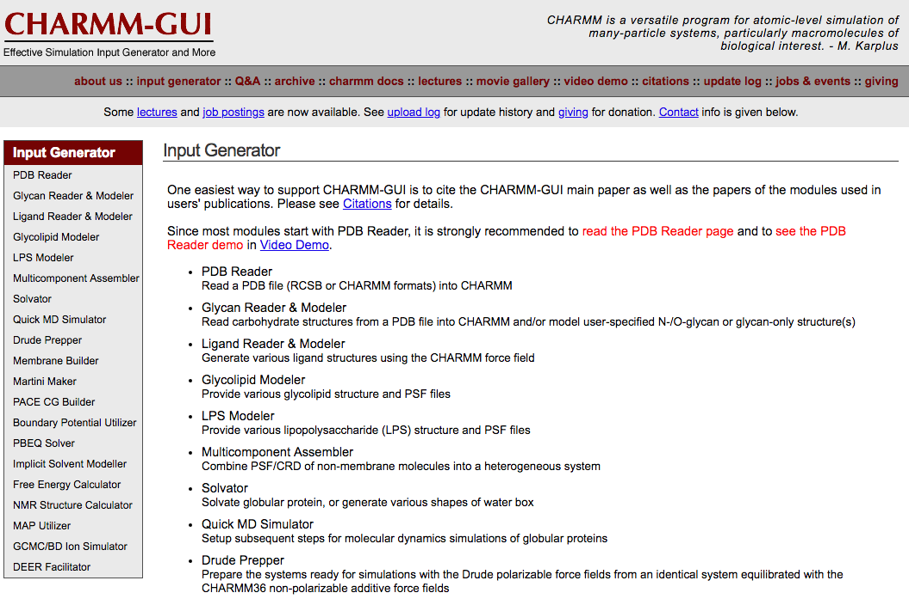
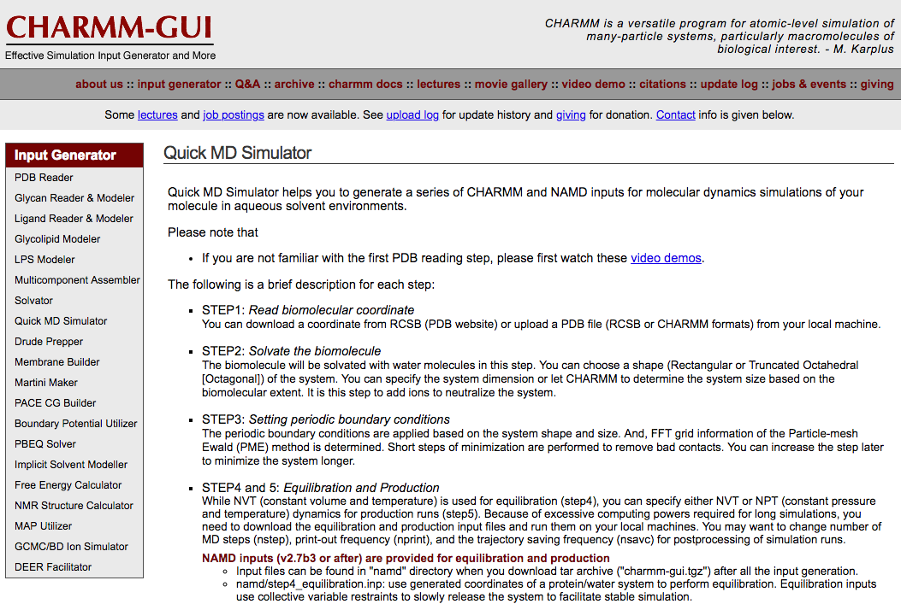
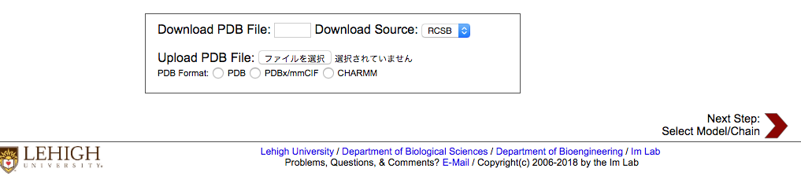
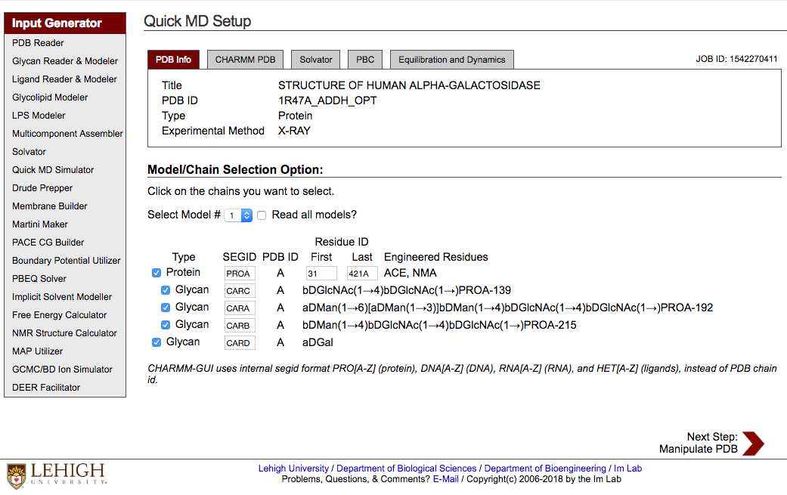
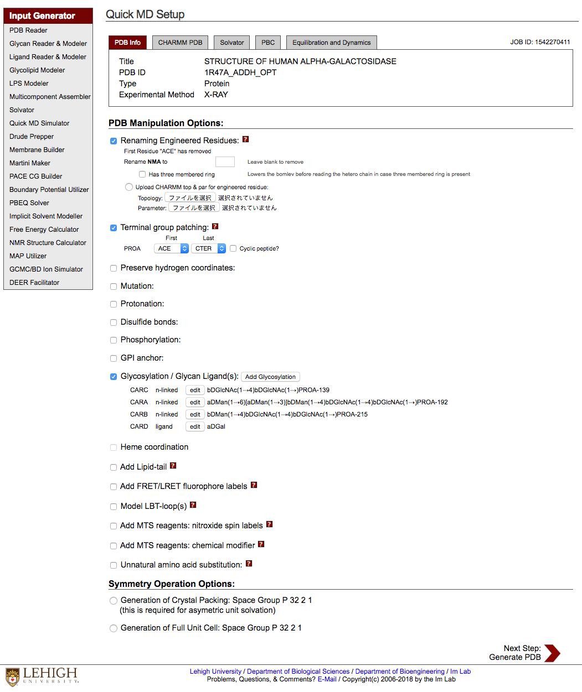
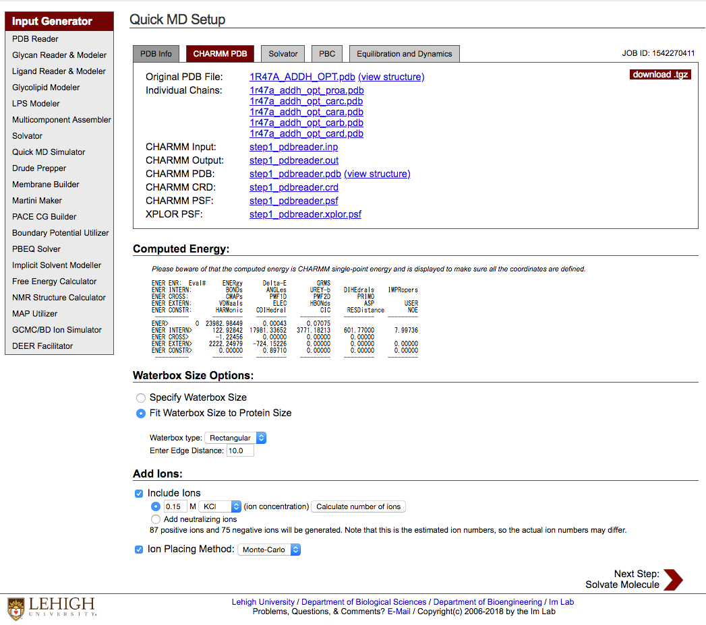
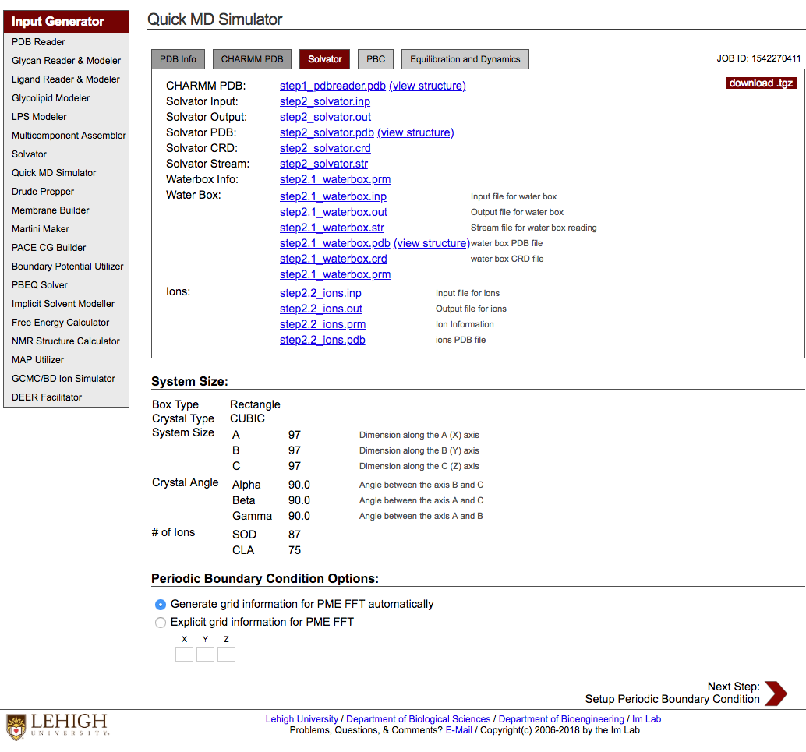
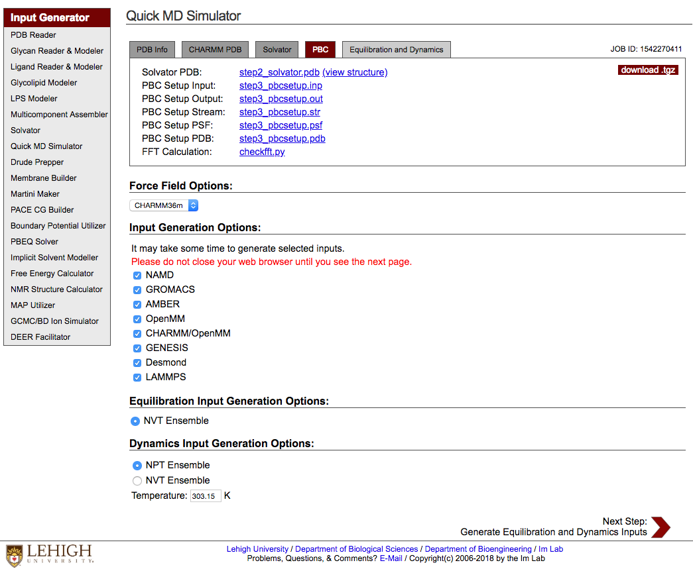
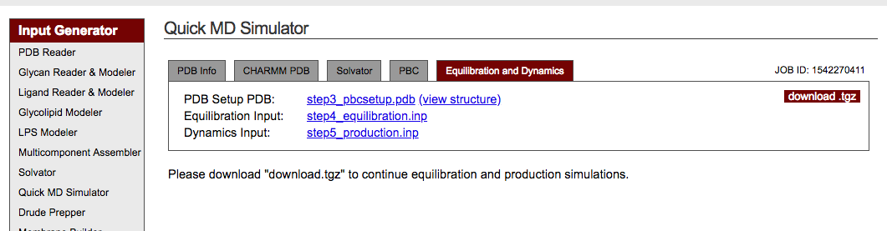

CHARMM-GUI 使い方まとめ
md perlTable of Contents
- 1. はじめに
- 2. この文書の目的
- 3. CHARMM-GUI の使い方
- 3.1. 表紙
- 3.2. Input Generator
- 3.3. Quick MD Simulator
- 3.4. Model/Chain Selection
- 3.5. Manipulate PDB
- 3.6. Computed Energy
- 3.7. Waterbox Size Options
- 3.8. Add ions
- 3.9. System Size
- 3.10. Force Field Options
- 3.11. Input Generation Options
- 3.12. Equilibration Input Generation Options
- 3.13. Dynamics Input Generation Options
- 3.14. download
- 4. MD 計算の実行(production run)
#+File Created:
#+Last Updated:
CHARMM-GUI を使って MD 計算用の構造をさくっと作る.
1 はじめに
MD (Molecular Dynamics) 計算を行うプログラムの主なもの(自分が知ってるもの).
- maestro/desmond (Academic Free)
- gromacs
- namd
- amber (free 版では CPU のみ)
- cosgene
1.1 maestro/desmond
今の一押しは maestro/desmond .
maestro は PDB データの準備から MD 計算用の構造の作成(水素付加したりとか, 周りに水入れたりとか, 足りない部分補ったりとか),
望みの MD 計算を行うまでの支援を行ってくれる GUI 部分.
desmond は MD 計算を実際に行うエンジン部分.
GUI で構造を作っていけるのでわかりやすくてよい.
手順どおりにやってけばいいので割と簡単.
手順を script に書いて自動で計算させる事もできる.
GPU を使えば計算はめちゃくちゃ速い. 速すぎてほんとに出来たのかよと思うほどである.
糖鎖とかリガンドとか色々ついてても基本自動でよしなにやってくれる.
素晴らしすぎる.
しかしこれは academic free なのである. そして free 版では使えない機能が結構あったりする.
商用版と free 版では使える力場も異なる.
マニュアルにこの機能は使えないって明示的に書いてないこともある.
やってみてエラーが出てはじめて使えないってわかったりもする.
その辺微妙に不親切な感じ.
純粋な academic 研究ならこれを使うのがいいと思う.
どれくらい五月蝿く言われるのかわからないがお金が絡むような場合は避けるのが無難か.
もしくは Schrodinger 社 から一式を購入するか.
買い方よくわかんないけど…
日本語の HP が表紙しかないようだ.
login するために request new password を何度か申請してみたが返事がなかった.
1.2 gromacs
次のおすすめは gromacs である.
gromacs は蛋白質だけの計算をするんであれば全く問題なく使える.
ligand がある場合は acpype を使えばよい.
amber で amber 力場でのファイルを作成して acpype で gromacs に 変換 でもいい.
計算速度は, desmond よりは 3 倍位遅い印象(GPU 使用時).
もうちょっと速くなってくれればなぁと思う今日このごろである.
リガンド的な化合物がある場合は acpype を使えばいいけど, 糖鎖とかがある場合(糖鎖がアミノ酸に共有結合してる)は色々と難しいようだ.
量子化学計算のプログラムが無いと出来ないっぽい. 例えば Gaussian とか. お金が無いので使ったことないけど 何かムズかしそう.
GAMESS とか Firefly とかいう freeware をインストールして使ってみたり, R.E.D. Server で計算させてみたり,
aspype で出来ないかなと思って頑張ってやってみたこともあったが結局よくわかんなかった.
gromacs 上で糖鎖入れた状態で MD 計算をさくっと出来ないもんかなぁ.
1.3 やりたいこと
ここでやりたいことは以下である:
gromacs(及びそのほかの MD 計算プログラム)で使う構造ファイルの作成を出来るだけ簡単に行いたい.
特に糖鎖のようなアミノ酸じゃない化合物が本体の蛋白質に共有結合してるような場合でも何とか簡単に出来ないもんだろうか.
色々調べてたら
How can I generate input files for MD simulations, performed in Gromacs, Namd and Charmm?
というサイトから
CHARMM-GUI とかいうめちゃ便利そうなサイトを見つけた.
色々と自動でやってくれるっぽい？ 求めてるのはこれかも？
2 この文書の目的
- CHARMM-GUI の使い方を自分が後で思い出せるように解説しておくこと.
- すぐに使えるように script を整備しておくこと.
- 各々の MD プログラムで, production run までの注意点/修正点等を記録しておくこと.
3 CHARMM-GUI の使い方
基本的には書いてある通りにやればいい.
準備しておくのは, MD simulation を行いたい系の PDB ファイル(あるいは PDB ID)のみである.
3.1 表紙
3.2 Input Generator

左側の Quick MD Simulator をクリックして次へ行く.
3.3 Quick MD Simulator
追記 Solvation Builder という名前に変わってる. Solvator + Quick MD Simulator => Solvation Builder?
基本的なやり方は同じようだ.

下の方に PDB ID や PDB ファイルを入れるところがある.

ここで使う PDB ファイルをアップロードする.
水素はなくても良い(default では付け直すので 追記: 水素が無いと化合物の自動同定が難しくなるのでやっぱつけといたほうがいい).
wild type でいい(mutation を設定するところがあるので).
Nest Step: Select Model/Chain をクリックして次へ行く.
3.4 Model/Chain Selection

PDB ファイルの解析結果が示される. どの部分構造を使うかチェックを入れる. default では全部使う.
Nest Step: Manipulate PDB をクリックして次へ.
3.5 Manipulate PDB

default では元々ついてる CAP(ACE など), 水素とかは一旦外されるっぽい(？)
アップロードした PDB ファイルについてる(自分でつけておいた)水素を使いたければ Preserve hydrogen coordinates にチェックを入れるとよい.
Terminal group patching には default でチェックがついてる. 外さなくていいかと思う.
Protonation, Disulfide Bonds, Mutation 等はチェックを入れれば選択肢が出てくる.
Disulfide Bonds は指定しなくてもある程度は自動で認識してくれてるようだ.
これらの設定をした後 PDB ファイルを作成し直す.
Next Step: Generate PDB をクリック.
3.6 Computed Energy

計算結果を確認する. たまに Energy にありえん値が入ってることがあるので注意.
結果が変であれば最初からやり直す.
遭遇した変な計算結果の例:
ENER ENR: Eval# ENERgy Delta-E GRMS ENER INTERN: BONDs ANGLes UREY-b DIHEdrals IMPRopers ENER CROSS: CMAPs PMF1D PMF2D PRIMO ENER EXTERN: VDWaals ELEC HBONds ASP USER ENER IMAGES: IMNBvdw IMELec IMHBnd RXNField EXTElec ---------- --------- --------- --------- --------- --------- ENER> 0 0.34485E+67 0.00000E+00 0.50297E+04 ENER INTERN> 11447.85374 1251.81849 848.71042 3924.08889 7.92236 ENER CROSS> 41.52221 0.00000 0.00000 0.00000 ENER EXTERN> 0.34485E+67 0.24339E+08 0.00000E+00 0.00000E+00 0.00000E+00 ENER IMAGES> 202108.80212 -624.50570 0.00000 0.00000 0.00000 ---------- --------- --------- --------- --------- ---------
0.34485E+67 とか.
3.7 Waterbox Size Options
基本 default で良いかと思う.
Rectaugular 以外にも選択肢がいくつかある.
3.8 Add ions
default で問題ないと思うが自分は KCl -> NaCl に変更してる.
ここまで設定が終わったら Next Step: Solvate Molecule をクリックする.
しばらく(結構)時間がかかる.
3.9 System Size

そのまま次に行こう.
Next Step: Setup Periodic Boundary Condition
3.10 Force Field Options

CHARMM36 と CHARMM36m の２つの選択肢がある.
default の CHARMM36m でいいだろう.
注: 力場について
default は CHARMM36m である.
CHARMM-GUI で選択出来る力場に関する論文は以下にある.
CHARMM36 all-atom additive protein force field: validation based on comparison to NMR data
CHARMM36m: An Improved Force Field for Folded and Intrinsically Disorderd Proteins
ざっと見ると, C36 は左巻き helix ができやすくて NMR のデータと合ってないと書いてある.
改良してるんだから C36m の方でいいのかな.
cosgene の設計書に, CHARMMm 力場での相互作用計算について, Amber 力場との比較が書いてある.
どんな関数を計算してるかがめちゃわかりやすく書いてあり超参考になる.
cosgene_design6
3.11 Input Generation Options
使いたい MD engine をチェックする.
実際自分が使うのは Gromacs, Amber, Desmond くらいか.
3.12 Equilibration Input Generation Options
NVT Ensemble でよい
3.13 Dynamics Input Generation Options
NPT Ensemble (default) でよい.
ここまで設定が終わったら Next Step: Generate Equilibration and Dynamics Inputs をクリックして終了である.
3.14 download

download.tgz をクリックすれば計算結果のダウンロードが始まる.
charmm-gui.tgz という名前のファイルがダウンロードされる.
4 MD 計算の実行(production run)
各々の MD engine での起動方法
charmm-gui.tgz を展開するとそれぞれの MD engine ごとに使用する構造ファイル及びパラメータファイル(の雛形)が出来ているのでそれを使えばよい.
4.1 gromacs2018
step5_production.mdp 内の nsteps=500000 = (1ns) 等パラメータをいくつか変更する.
step5_production.mdp の変更例は以下:
dt = 0.002 # 変えない. 2(fs) 0.002*500(step) =1(ps) 500steps = 1ps nsteps = 50000000 # 例: 100(ns) nstlog = 5000 # log ファイル書き出す頻度 nstxout = 25000 # trr ファイルに構造書き出す頻度 nstvout = 25000 # trr ファイル 速度 nstfout = 25000 # trr ファイル 力 nstcalcenergy = 100 # ここは変えなくていい? nstenergy = 5000 # edr ファイルに energy を書き出す頻度 every 10(ps)
追記:
step4.0_minimization.mdp の nsteps=50000 (<- 5000) に変更.
step4.1_equilibration.mdp の nsteps=250000 (<- 25000) に変更.
以下の script 経由で実行できる.
shell script でいいけど自分は perl が一番わかり易いので perl で書いてみた.
1: #!/usr/bin/env perl 2: use strict; 3: use warnings; 4: 5: # 6: # CHARMM-GUI Quick MD Simulator で作られたファイルの実行 script 7: # gromacs2018 版 8: # 9: 10: my $cmd="/usr/local/gromacs2018.gpu/bin/gmx"; 11: my $pdb ="step3_charmm2gmx.pdb"; 12: my $top ="topol.top"; 13: my $idx ="index.ndx"; 14: 15: # 1. 構造最適化 16: # step4.0 17: my $mdp40="step4.0_minimization.mdp"; 18: my $tpr40="step4.0_minimization.tpr"; 19: my $cmd40="$cmd grompp -f $mdp40 -o $tpr40 -c $pdb -p $top -r $pdb"; 20: my $md40 ="$cmd mdrun -v -deffnm step4.0_minimization"; 21: print $cmd40."\n"; 22: system($cmd40); 23: print $md40."\n"; 24: system($md40); 25: 26: # 2. 平衡化 MD 27: # step4.1 28: my $gro41="step4.0_minimization.gro"; 29: my $mdp41="step4.1_equilibration.mdp"; 30: my $tpr41="step4.1_equilibration.tpr"; 31: my $cmd41="$cmd grompp -f $mdp41 -o $tpr41 -c $gro41 -r $pdb -n $idx -p $top"; 32: my $md41 ="$cmd mdrun -v -deffnm step4.1_equilibration"; 33: print $cmd41."\n"; 34: system($cmd41); 35: print $md41."\n"; 36: system($md41); 37: 38: # 3. Production Run 39: # step5 40: my $gro50="step4.1_equilibration.gro"; 41: my $mdp50="step5_production.mdp"; # 書き換える 42: my $tpr50="step5_0.tpr"; 43: my $cmd50="$cmd grompp -f $mdp50 -o $tpr50 -c $gro50 -n $idx -p $top -r $gro50"; 44: my $md50 ="$cmd mdrun -v -deffnm step5_0"; 45: print $cmd50."\n"; 46: system($cmd50); 47: print $md50."\n"; 48: system($md50); 49: 50: # $ex(ps) ずつ追加計算する場合(必要ならば) 51: # extend 1000(ps) 52: my $ex=1000; # ps 53: my $max=2; 54: for my $p (0 .. $max) { 55: my $n=$p+1; 56: my $cpi ="step5_".$p.".cpt"; 57: my $tpr5p="step5_".$p.".tpr"; 58: my $tpr5n="step5_".$n.".tpr"; 59: my $deff ="step5_".$n; 60: my $cmd5x="$cmd convert-tpr -s $tpr5p -o $tpr5n -extend $ex"; # -f -e は廃止 61: my $md5x ="$cmd mdrun -v -s $tpr5n -deffnm $deff -cpi $cpi -noappend"; 62: print $cmd5x."\n"; 63: system($cmd5x); 64: print $md5x."\n"; 65: system($md5x); 66: }
手動でやるならば以下のコマンドを順に起動すればよい.
最適化計算:
gmx grompp -f step4.0_minimization.mdp -o step4.0_minization.tpr -c step3_chamm2gmx.pdb -p topol.top -r step3_charmm2gmx.pdb gmx mdrun -v -deffnm step4.0_minimization
平衡化MD:
gmx grompp -f step4.1_equilibration.mdp -o step4.1_equilibration.tpr -c step4.0_minimization.gro -r step3_charmm2gmx.pdb -n index.ndx -p topol.top gmx mdrun -v -deffnm step4.1_equilibration
MD 計算:
gmx grompp -f step5_production.mdp -o step5_0.tpr -c step4.1_equilibration.gro -n index.ndx -p topol.top -r step4.1_equilibration.gro gmx mdrun -v -deffnm step5_0
extend(必要ならば):
gmx convert-tpr -s step5_0.tpr -o step5_1.tpr -extend 1000 # 以前の計算の最終から 1000 (ps) だけ計算を進める gmx mdrun -v -s step5_1.tpr -deffnm step5_1 -cpi step5_0.cpt -noappend # 新しいファイルに書き出し
4.2 desmond
このままでは動かなかったのでファイルを修正する.
4.0_equilibration の計算において
- cfg ファイルを以下のように修正する:
1.1. list = [status … simbox_output maeff_output ….] の simbox_output, maeff_output を削除
1.2. trajectory { name = hogehoge_trj …} のように名前の最後に "_trj" をつける
- cms ファイルを以下のように修正する:
2.1. 残基名が 4 文字以上のものがあればうまく読み込めないので 4 文字以下に修正する.
step5_production.cfg ファイルの time=1000 (1ns) を修正する.
以下で desmond を起動する.
1: #!/usr/bin/env perl 2: use strict; 3: use warnings; 4: 5: my $cmd='/opt/schrodinger2018-1/desmond'; 6: 7: my $s4='step4.0_minimization.cfg'; 8: my $eq='step4.1_equilibration.cfg'; 9: my $s5='step5_production.cfg'; 10: 11: my $min="$cmd -c $s4 -WAIT"; 12: print $min."\n"; 13: system($min); 14: 15: my $equ="$cmd -c $eq -WAIT -gpu"; 16: print $equ."\n"; 17: system($equ); 18: 19: my $pro="$cmd -c $s5 -WAIT -gpu"; 20: print $pro."\n"; 21: system($pro);
4.3 namd
step5_production.inp の run = 500000 (1ns) を書き換えてから
以下のように起動出来る
1: #!/usr/bin/env perl 2: use strict; 3: use warnings; 4: 5: my $cmd='/usr/local/bin/namd2'; 6: 7: my $s4='step4_equilibration.inp'; 8: my $l4='step4.log'; 9: my $s5='step5_production.inp'; 10: my $l5='step5.log'; 11: 12: print 'step4: '.`date`; 13: my $md4="$cmd +p10 $s4 > $l4"; 14: print $md4."\n"; 15: system($md4); 16: 17: print 'step5: '.`date`; 18: my $md5="$cmd +p10 $s5 > $l5"; 19: print $md5."\n"; 20: system($md5); 21: print 'end : '.`date`;
4.4 amber
step5_production.mdin nstlim=500000 (=1ns) を修正して
以下の script で起動する.
1: #!/usr/bin/env perl 2: use strict; 3: use warnings; 4: 5: # 6: # charmm-gui で得たパラメータを用いた amber(sander) MD 計算 7: # 8: 9: my $cmd="/usr/local/bin/sander"; 10: 11: # 構造最適化 12: # step4.0 13: my $s3='step3_charmm2amber'; 14: my $s4='step4.0_minimization'; 15: my $cmd40="$cmd -O -i $s4.mdin -p $s3.parm7 -c $s3.rst7 -o $s4.mdout -r $s4.rst7 -inf $s4.mdinfo -ref $s3.rst7"; 16: print 'step4.0 stt: '.`date`; 17: print $cmd40."\n"; 18: system($cmd40); 19: print 'step4.0 end: '.`date`; 20: 21: # 平衡化 22: # step4.1 23: my $eq='step4.1_equilibration'; 24: my $cmd41="$cmd -O -i $eq.mdin -p $s3.parm7 -c $s4.rst7 -o $eq.mdout -r $eq.rst7 -inf $eq.mdinfo -ref $s3.rst7 -x $eq.nc"; 25: print 'step4.1 stt: '.`date`; 26: print $cmd41."\n"; 27: system($cmd41); 28: print 'step4.1 end: '.`date`; 29: 30: 31: # Production Run 32: # step5 33: my $s5='step5_production'; 34: my $st='step5_0'; 35: my $cmd50="$cmd -O -i $s5.mdin -p $s3.parm7 -c $eq.rst7 -o $st.mdout -r $st.rst7 -inf $st.mdinfo -x $st.nc"; 36: print 'step5.0 stt: '.`date`; 37: print $cmd50."\n"; 38: system($cmd50); 39: print 'step5.0 end: '.`date`; 40: 41: # Extend 42: my $max=2; # 変更 43: print 'step5.1 stt: '.`date`; 44: for my $p (0 .. $max) { 45: my $n=$p+1; 46: my $pt='step5_'.$p; 47: my $st='step5_'.$n; 48: my $cmd51="$cmd -O -i $s5.mdin -p $s3.parm7 -c $pt.rst7 -o $st.mdout -r $st.rst7 -inf $st.mdinfo -x $st.nc"; 49: print $cmd51."\n"; 50: system($cmd51); 51: } 52: print 'step5.1 end: '.`date`;